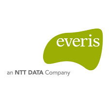

<mat-sidenav-container class="sidenav-container">
  <mat-sidenav #drawer class="sidenav" fixedInViewport [attr.role]="(isHandset$ | async) ? 'dialog' : 'navigation'"
    [mode]="(isHandset$ | async) ? 'over' : 'side'" [opened]="(isHandset$ | async) === false">
    
    <mat-nav-list>
      <a mat-list-item routerLink="user-list">Lista de usuarios</a>
      <a mat-list-item *ngIf="onlyCL" target="_blank"
        href="https://app.powerbi.com/groups/me/reports/1e9ef263-20d2-4a1b-ba8b-be5e191a90d7/ReportSection?ctid=3048dc87-43f0-4100-9acb-ae1971c79395">Reporte
        - Covid-19</a>
      <a mat-list-item *hasPermission="['EJECUTIVO','ADMINISTRADOR']; domain 'SEGUIMIENTO_PROYECTOS'"
        routerLink="project-tracking">Seguimiento de proyecto</a>
      <a mat-list-item *ngIf="onlyCL" target="_blank" href="https://app.powerbi.com/">Reporte - Proyecto</a>
      <a mat-list-item *hasPermission="['EJECUTIVO','ADMINISTRADOR']; domain 'CONTINGENCIA'" routerLink="plan-cont">Plan
        de contingencia</a>
      <a mat-list-item *hasPermission="['ADMINISTRADOR']; domain 'APPCHILE'" routerLink="admin-profiles">Administración
        de perfiles</a>
      <a mat-list-item href="/" (click)="salir()">Salir</a>
    </mat-nav-list>
  </mat-sidenav>
  <mat-sidenav-content>
    <mat-toolbar color="primary">
      <button type="button" aria-label="Toggle sidenav" mat-icon-button (click)="drawer.toggle()">
        <mat-icon aria-label="Side nav toggle icon">menu</mat-icon>
      </button>
      <span class="title">App Chile</span>
    </mat-toolbar>
    <router-outlet></router-outlet>
  </mat-sidenav-content>
</mat-sidenav-container>